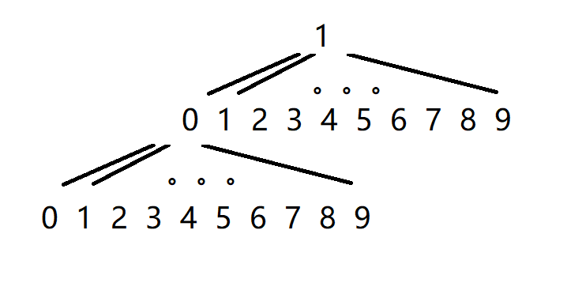

题目描述
给定整数n和m, 将1到n的这n个整数按字典序排列之后, 求其中的第m个数。
对于n=11, m=4, 按字典序排列依次为1, 10, 11, 2, 3, 4, 5, 6, 7, 8, 9, 因此第4个数是2.
对于n=200, m=25, 按字典序排列依次为1 10 100 101 102 103 104 105 106 107 108 109 11 110 111 112 113 114 115 116 117 118 119 12 120 121 122 123 124 125 126 127 128 129 13 130 131 132 133 134 135 136 137 138 139 14 140 141 142 143 144 145 146 147 148 149 15 150 151 152 153 154 155 156 157 158 159 16 160 161 162 163 164 165 166 167 168 169 17 170 171 172 173 174 175 176 177 178 179 18 180 181 182 183 184 185 186 187 188 189 19 190 191 192 193 194 195 196 197 198 199 2 20 200 21 22 23 24 25 26 27 28 29 3 30 31 32 33 34 35 36 37 38 39 4 40 41 42 43 44 45 46 47 48 49 5 50 51 52 53 54 55 56 57 58 59 6 60 61 62 63 64 65 66 67 68 69 7 70 71 72 73 74 75 76 77 78 79 8 80 81 82 83 84 85 86 87 88 89 9 90 91 92 93 94 95 96 97 98 99 因此第25个数是120…
分析：由于首位不能为0，所以可以构造出以0-9为根的9棵十叉树。

以字典序排序就是求上述十叉树的深度遍历。深度遍历一般使用递归实现。
有意思的是，如果使用广度搜索，就可以实现自然数顺序的排序。
代码实现
python实现
1.暴力排序
[n, m] = map(int, input().split())
strList = [str(i) for i in range(1, n+1)]
strList.sort()
print(int(strList[m-1]))python对于字符串的排序方式就是按照字典顺序进行排序的，但是会直接内存溢出。
2.字典树
[n, m] = map(int, input().split())
re = 0
def findNum(value):
global re, m
if int(value)<=n:
# 以字典序从小到大查找，每找到一个就小于n的数就使全局变量m-1
m-=1
# m减到0，表示已经找到第m个数
if m==0:
re = value
return True
for i in range(10):
flag = findNum(value+str(i))
# 通过return True跳过接下来所有的递归
if flag:
return True
# 通过return 0来停止同一深度的递归，比如100已经超过n，则不再递归101
if flag == 0:
break
else:
return 0
for a in range(1,10):
flag = findNum(str(a))
if flag:
break
print(re)深度遍历字典树应该是最符合题目要求的做法，不过python使用递归效率不高，百万级数据就已经显示超时。
3.找规律
规律
实际上，上面的字典树的目的在于找出第m个数在哪一个字典树以及在某个字典树的哪个位置。
而上面的字典树递归解法，浪费了太多时间在递归上，而实际上很多递归是不必要的。我们可以通过计算以1开头的字典树的元素个数，和m比较，这样就可以知道m是否在以1开头的字典树中。
比如以 $n=25,m=20$ 为例。
小于等于25的数字按照字典序进行排序分别为：1 10 11 12 13 14 15 16 17 18 19 2 20 21 22 23 24 25 3 4 5 6 7 8 9
我们可以发现一些规律：
由于25是2位数字，所以字典序中存在2位数字，又由于25的首位为2，所以只有1和2开头的可以取到2位数字，而剩下的3到9开头的数字则少一位。
1和2开头的可以取到2位数字，而由于n为25，所以以2开头的数字取不满所有2位数，只有以1开头的数字可以取满，分别为10 11 12 13 14 15 16 17 18 19共10个数字再加上一位的1，以1开头的数字一共是$10^0+10^1=11$ ，以2开头的数字有$10^0+(25 - 2*10^1+1) = 7$个，以3、4、5、6、7、8、9开头的各1个。
由上述规律可知，以1开头的数字为11个，以1开头的数排列完成之后才会有以2开头的数。由于m为20大于11，那么必然第20个数不会是以1开头。
因此，递归的过程可以由计算以某个数字开头的所有数字个数替代，以减少计算次数。
AC代码
# 以pre开头，并且小于等于n的数字个数
def culculateNum_with_prefix(n, pre):
n, pre = str(n), str(pre)
len_n, len_p = len(n), len(pre)
# 以0开头的非法数字或者upper位数小于pre
if len_n < len_p or pre.startswith("0"):
return 0
# n的相同位数前缀
pre_upper = n[:len_p]
# pre小于n的前缀
if pre < pre_upper:
return int("1" * (1 + len_n - len_p))
# pre大于n的前缀
if pre > pre_upper:
return int("1" * (len_n - len_p)) if len_n > len_p else 0
# 开头相同，位数也相同，则只有pre本身一个数；开头相同，位数不同则需要分开计算
return int("1" * (len_n - len_p)) + 1 + int(n[len_p:]) if len_n > len_p else 1
n,m = list(map(int,input().split()))
digits = tuple(str(x) for x in range(10))
prefix, rank = "", 0
while rank < m:
for i in range(len(digits)):
d = digits[i]
num = culculateNum_with_prefix(n, prefix + d)
if rank + num >= m:
break
rank += num
prefix += d
rank += 1
print(prefix)代码解析
上面的culculateNum_with_prefix函数用数字的位数快速计算以某数为前缀的数字个数，这实际上就是以这个前缀pre为根节点的字典树元素个数。
数字个数计算分为三种情况：
pre小于n的前缀
举个例子，n=250， pre=1，则计算以1开头且小于250的数，分别为1、10-19、100-199共111个数，因为pre小于同位数的n的前缀2，所以相同位数的以pre开头的数字全都小于n。个数与n与pre的位数差有关，每相差一位，个数多十倍。所以满足条件的数字个数为位数差+1个1，以上面的250为例，位数差为2为，则数字个数为3个1，即111。
pre大于n的前缀
n=250， pre=3，满足条件的数只能为1位或者2位数字，即3、30-39共11个数字，所以是位数差个1，2个1即11。
pre等于n的前缀
pre等于n的前缀的情况分为两种。第一种，pre和n的位数相同。例如n=250， pre=250，则只有250这一个数字。
第二种pre小于n的位数，比如n=250， pre=2，满足条件的数为1、2、3位，即2、20-29、200-250共62个数字。62由两部分计算而成：位数小于n的数、位数等于n的数。分别为位数差个1、除去前缀后的数的个数+1。在这个例子中，第一部分，位数小于n（2、20-29）：250和2位数相差2，2个1即11；第二部分，位数相同（200-250）：250去除前缀2之后等于50，再加一，得51。共62个数。
计算过程
计算第m个数的时候，首先我们计算所有以1开头并且小于n的数字个数，这个数字小于m则继续计算以2开头并且小于n的数字个数。若这个数字大于m，则表明第m个数一定是以1为前缀，此时再继续以10为前缀……并且前缀每增加一位，表明字典深度增加1，所以根节点保证满足小于m，要把根节点也加上。
对于以n=200, m=25为例，
- 首先计算以1开头的数字个数为111，显然大于m。 所以m必然以1开头，已经查找的数为根节点1，rank置为1；
- 计算以10开头的数字个数为11，小于m。加上根节点1已经查找了12个数，rank置为12；
- 计算以11开头的数字个数为11个，已经查找了前23个数小于m，rank置为23；
- 计算以12开头的数字个数为11个，加上之前的23已经超过m。 所以m必然以12开头，加上满足条件的根节点12，rank置为24；
- 计算以120开头的数字个数为1，加上rank=24，正好25。查找完毕。
C++实现
#include <iostream>
#include <cstring>
#include <string>
#include <vector>
#include <algorithm>
using namespace std;
vector<string> ve;
int culculateNum_with_prefix(string n, string pre){
int len_n = n.size();
int len_p = pre.size();
if((len_n<len_p) | (pre[0]=='0'))return 0;
string n_pre;
n_pre = n.substr(0,len_p);
if(pre<n_pre){
// 重复打印1+len_n-len_p个1
string tmp(1 + len_n-len_p,'1');
return atoi(tmp.c_str());
}
else if(pre>n_pre){
if(len_n>len_p){
string tmp(len_n-len_p,'1');
return atoi(tmp.c_str());
}
else{
return 0;
}
}
else{
if(len_n>len_p){
string str = n.substr(len_p);
string tmp(len_n-len_p,'1');
return atoi(tmp.c_str()) + 1 + atoi(str.c_str());
}
else{
return 1;
}
}
}
int main(){
int n,m;
cin>>n>>m;
// n = 1000000;
// m = 888888;
for(int i=0;i<=9;i++){
ve.push_back(to_string(i));
}
string prefix = "";
int rank = 0;
int num = 0;
string d = "";
while (rank<m){
for(int j=0;j<10;j++){
d = ve[j];
num = culculateNum_with_prefix(to_string(n), prefix+d);
if(rank+num>=m){
break;
}
rank+=num;
}
prefix+=d;
rank+=1;
}
cout<<prefix<<endl;
cin.get();
return 0;
}